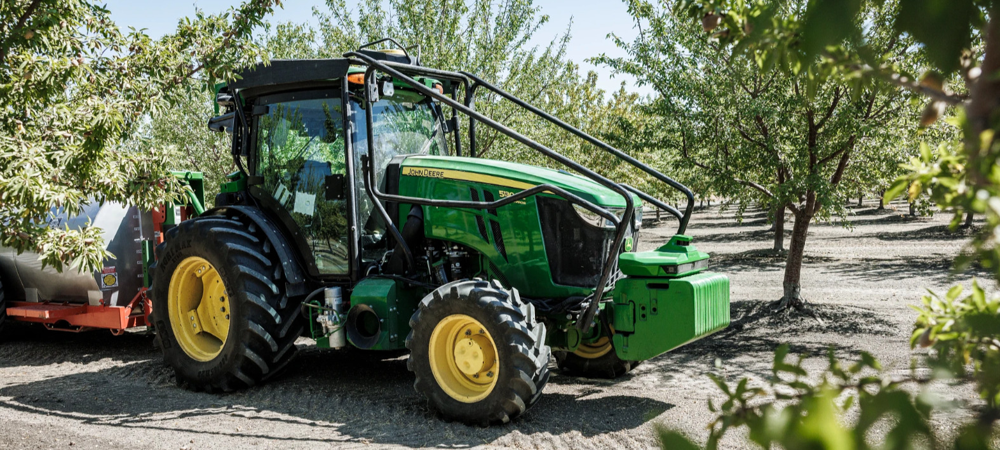

You will be redirected to John Deere's website shortly. Thank you for visiting!
We are excited to announce that Bear Flag Robotics is now part of John Deere!
Together, we are accelerating the development of autonomous technology to revolutionize farming.

Learn more about this partnership:
John Deere Acquires Bear Flag Robotics 2021
John Deere Reveals Fully Autonomous Tractor at CES 2022
John Deere Reveals New Autonomous Machines & Technology at CES 2025
Interested in joining our team? Explore career opportunities at John Deere
Continue to John Deere's website